TownKit — реальные 3D-модели
Набор визуальных моделей. Масштаб: 1 единица = 1 метр. Передняя сторона +Z. На игровые сцены не добавлены.
Buildings
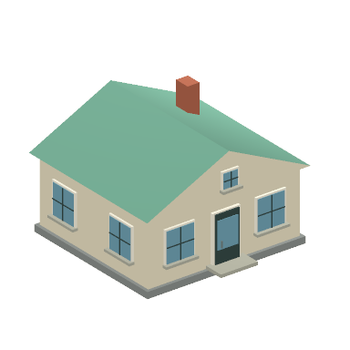
Частный домHouseCream · 404 треугольников · 7.55 × 5.4 × 7.72 мOBJ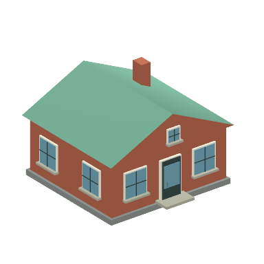
Кирпичный домHouseBrick · 404 треугольников · 7.55 × 5.4 × 7.72 мOBJ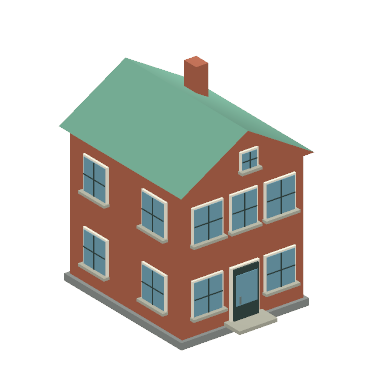
ТаунхаусTownhouse · 704 треугольников · 5.95 × 8.3 × 7.72 мOBJ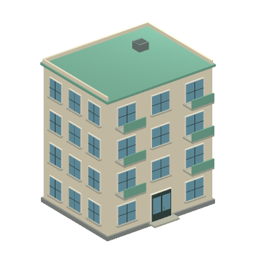
Малый многоквартирный домApartmentSmall · 1740 треугольников · 10.43 × 12.56 × 9.35 мOBJ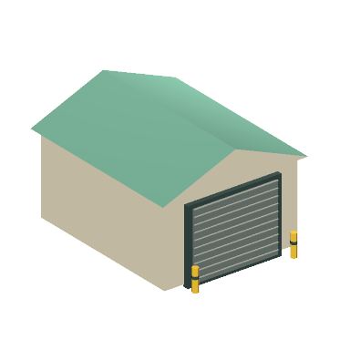
ГаражGarage · 292 треугольников · 5.9 × 4.5 × 7.6 мOBJ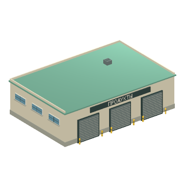
Продуктовая оптовая базаWholesaleBase · 1452 треугольников · 20.44 × 6.26 × 14.02 мOBJ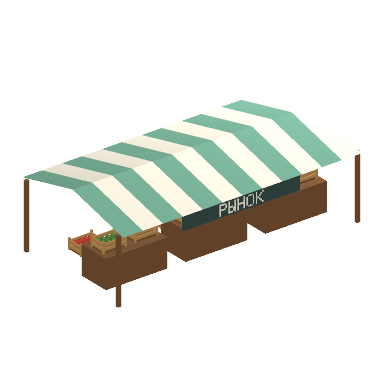
Фермерский рынокFarmersMarket · 4208 треугольников · 12.18 × 4 × 6.6 мOBJ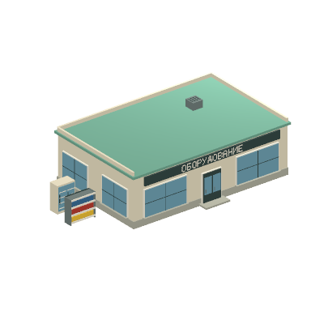
Магазин торгового оборудованияEquipmentSupplier · 1680 треугольников · 17.53 × 5.06 × 10.78 мOBJ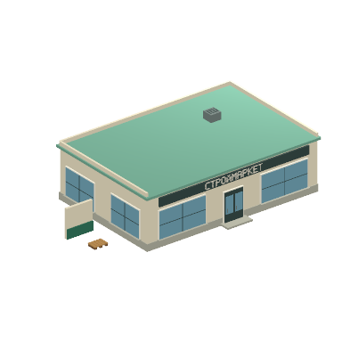
Строительство и декорConstructionSupplier · 1190 треугольников · 18.54 × 5.06 × 11.78 мOBJ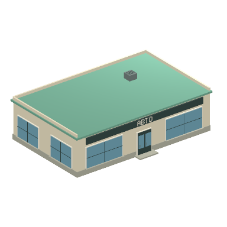
АвтосалонCarDealership · 598 треугольников · 16.46 × 4.97 × 11.1 мOBJ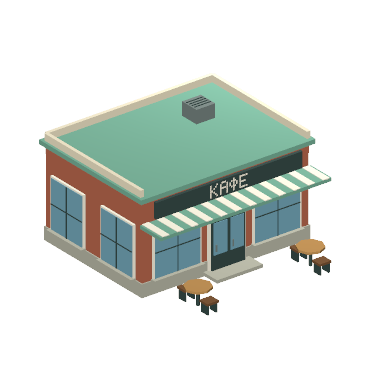
КафеCafe · 1310 треугольников · 8.5 × 5.06 × 9.62 мOBJ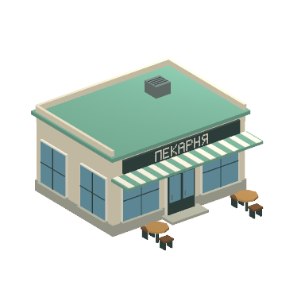
ПекарняBakery · 1414 треугольников · 8.5 × 5.06 × 9.62 мOBJ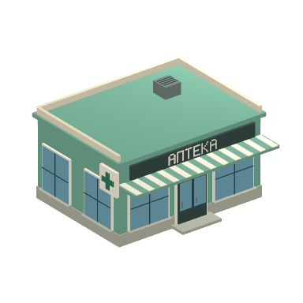
АптекаPharmacy · 1136 треугольников · 8.53 × 5.06 × 8.17 мOBJ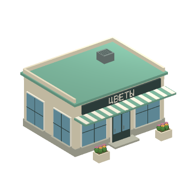
Цветочный магазинFlowerShop · 3466 треугольников · 8.5 × 5.06 × 8.72 мOBJRoads
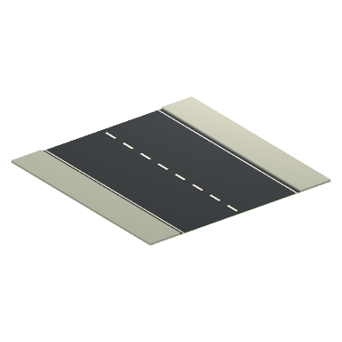
Прямая дорога 12 мRoadStraight · 48 треугольников · 12 × 0.13 × 12 мOBJ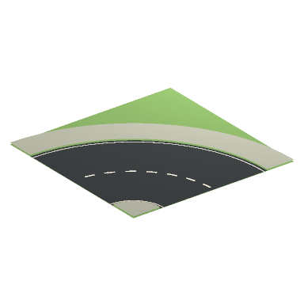
Поворот дороги 90 градусовRoadCorner · 174 треугольников · 12 × 0.13 × 12 мOBJ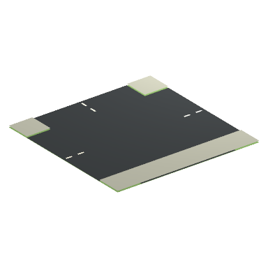
Т-образный перекрёстокRoadTee · 30 треугольников · 12 × 0.13 × 12 мOBJ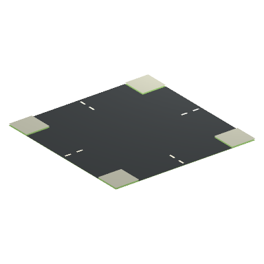
Крестовой перекрёстокRoadCross · 32 треугольников · 12 × 0.13 × 12 мOBJ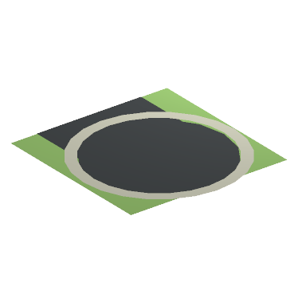
Тупик с разворотомRoadDeadEnd · 118 треугольников · 12 × 0.13 × 12.8 мOBJ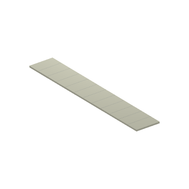
Прямой тротуарSidewalkStraight · 34 треугольников · 2 × 0.13 × 12 мOBJ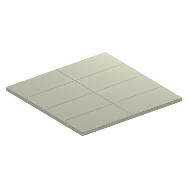
Угловой тротуарSidewalkCorner · 20 треугольников · 4 × 0.13 × 4 мOBJ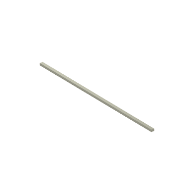
БордюрCurb · 12 треугольников · 0.25 × 0.18 × 12 мOBJ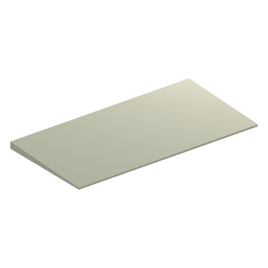
Пониженный въездDrivewayCurb · 12 треугольников · 4 × 0.14 × 2 мOBJПешеходный переходCrosswalk · 20 треугольников · 7.63 × 0 × 3 мOBJ
Разметка полосLaneMarkings · 16 треугольников · 0.12 × 0 × 11.3 мOBJ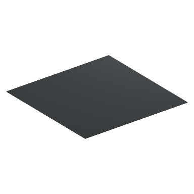
Асфальтовая площадка 12 на 12 мAsphaltPad · 12 треугольников · 12 × 0.05 × 12 мOBJ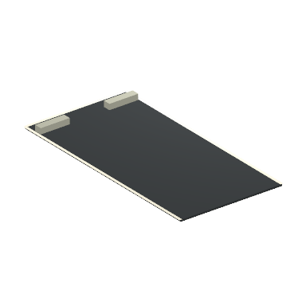
Парковочное местоParkingBay · 42 треугольников · 2.88 × 0.21 × 5.64 мOBJ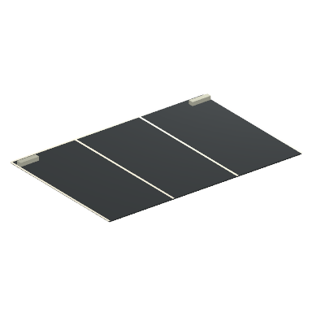
Парковка на три машиныCustomerParking · 46 треугольников · 8.47 × 0.21 × 5.64 мOBJ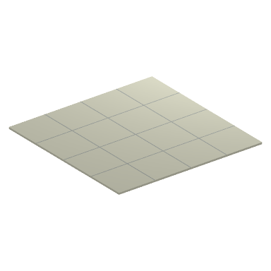
Плитка площадиPlazaTile · 24 треугольников · 4 × 0.05 × 4 мOBJ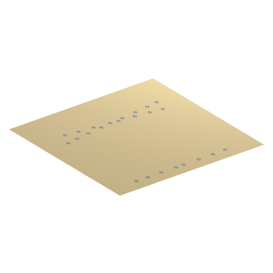
Гравийное покрытиеGravelTile · 194 треугольников · 4 × 0.04 × 4 мOBJ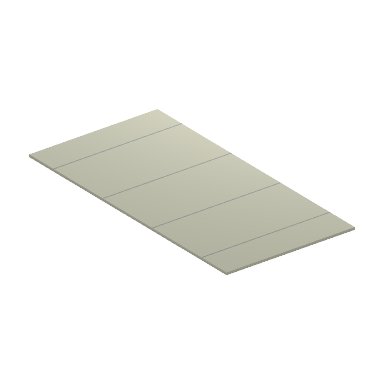
Парковая дорожкаParkPath · 20 треугольников · 2 × 0.04 × 4 мOBJLogistics
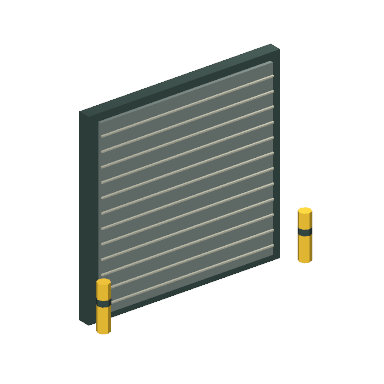
Погрузочные воротаLoadingGate · 296 треугольников · 4.35 × 3.8 × 0.9 мOBJ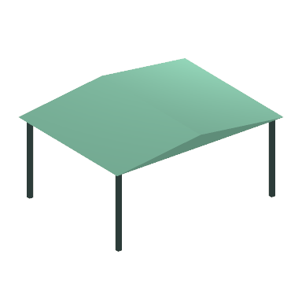
Погрузочный навесLoadingCanopy · 56 треугольников · 8.7 × 4.25 × 6.7 мOBJ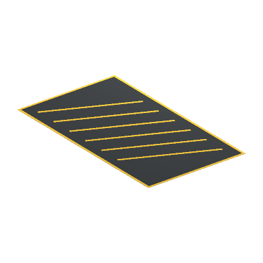
Зона остановки для погрузкиPickupStopZone · 82 треугольников · 4 × 0.01 × 7 мOBJ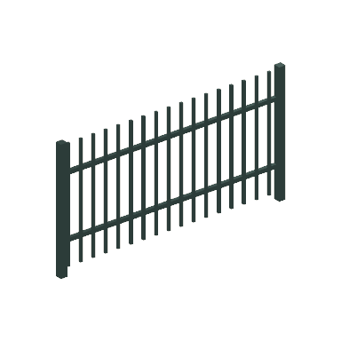
Промышленное ограждениеIndustrialFence · 252 треугольников · 4.12 × 2.2 × 0.13 мOBJ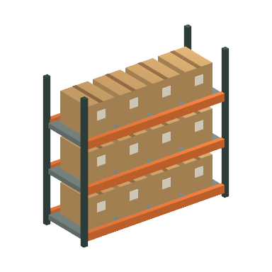
Складской стеллаж с коробкамиWarehouseRack · 588 треугольников · 3.3 × 3 × 1.2 мOBJ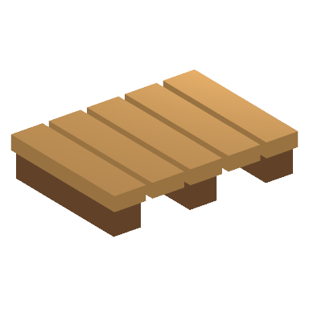
Деревянный поддонPallet · 96 треугольников · 1.16 × 0.25 × 0.85 мOBJ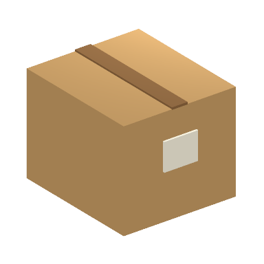
Малая коробкаBoxSmall · 36 треугольников · 0.4 × 0.36 × 0.46 мOBJ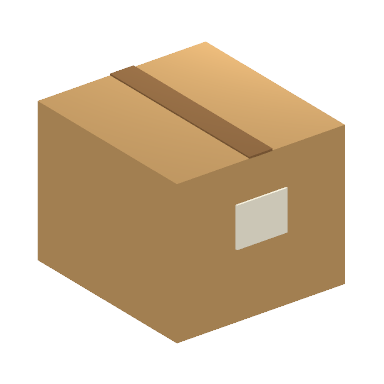
Средняя коробкаBoxMedium · 36 треугольников · 0.65 × 0.56 × 0.71 мOBJ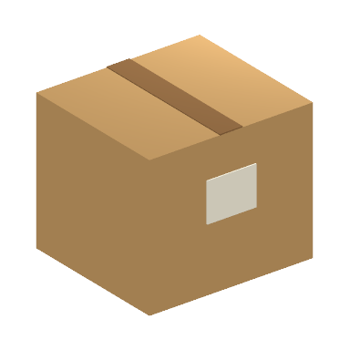
Большая коробкаBoxLarge · 36 треугольников · 1 × 0.86 × 0.91 мOBJ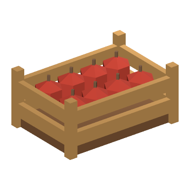
Ящик фруктовFruitCrate · 476 треугольников · 1.18 × 0.55 × 0.83 мOBJ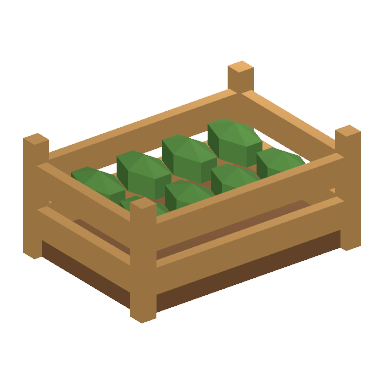
Ящик овощейVegetableCrate · 348 треугольников · 1.18 × 0.55 × 0.83 мOBJ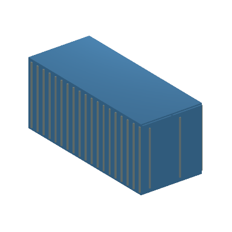
Грузовой контейнерCargoContainer · 516 треугольников · 2.59 × 2.6 × 6.09 мOBJ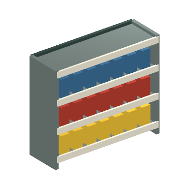
Выставочный торговый стеллажRetailShelf · 384 треугольников · 2.48 × 2.1 × 0.86 мOBJ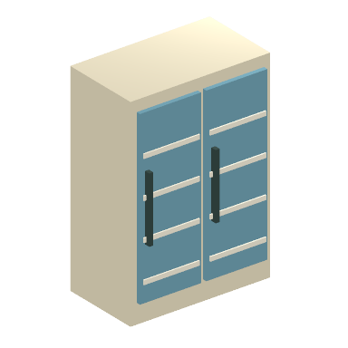
Выставочный холодильникRefrigerator · 156 треугольников · 1.6 × 2.3 × 1.02 мOBJ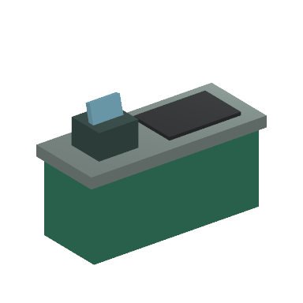
Кассовый прилавокCheckoutCounter · 60 треугольников · 2.45 × 1.73 × 1 мOBJ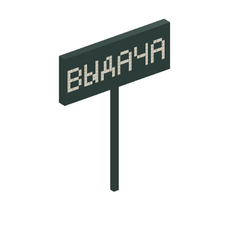
Знак выдачи заказов без стрелкиPickupSign · 236 треугольников · 1.9 × 2.43 × 0.14 мOBJStreet
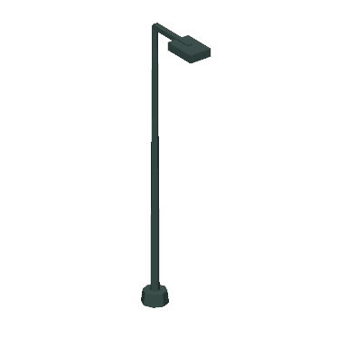
Фонарный столбStreetLamp · 100 треугольников · 0.5 × 5.45 × 1.56 мOBJ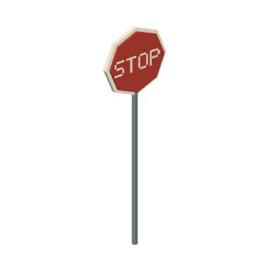
Знак STOPStopSign · 202 треугольников · 0.96 × 3.08 × 0.11 мOBJ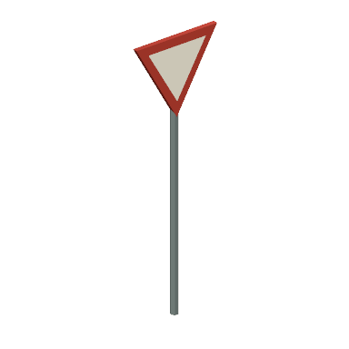
Знак уступить дорогуYieldSign · 33 треугольников · 0.96 × 2.95 × 0.08 мOBJ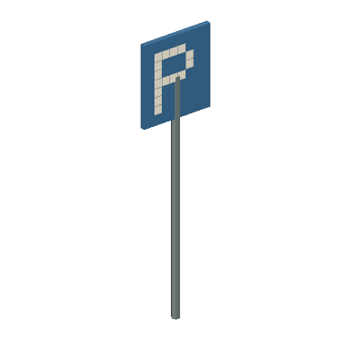
Знак парковкиParkingSign · 66 треугольников · 0.8 × 3.05 × 0.08 мOBJЗнак одностороннего движенияOneWaySign · 49 треугольников · 0.8 × 3.05 × 0.09 мOBJСкамьяBench · 132 треугольников · 1.9 × 1.09 × 0.67 мOBJУрнаLitterBin · 96 треугольников · 0.6 × 0.91 × 0.6 мOBJОстановкаBusStop · 228 треугольников · 4.9 × 2.93 × 2.2 мOBJЗабор двораDomesticFence · 368 треугольников · 3.12 × 1.2 × 0.13 мOBJКалиткаDomesticGate · 168 треугольников · 1.32 × 1.2 × 0.13 мOBJЦветочная кадкаFlowerPlanter · 1194 треугольников · 1 × 1.09 × 0.7 мOBJКлумбаFlowerBed · 1688 треугольников · 2.2 × 0.75 × 1.4 мOBJПочтовый ящикMailbox · 36 треугольников · 0.48 × 1.56 × 0.55 мOBJХозяйственный контейнерWasteContainer · 260 треугольников · 1.64 × 1.38 × 1.32 мOBJОграничительный столбикBollard · 64 треугольников · 0.18 × 1 × 0.18 мOBJNature
Круглая кронаTreeRound · 216 треугольников · 3.66 × 4.87 × 3.3 мOBJВысокое лиственное деревоTreeTall · 216 треугольников · 3.1 × 6.16 × 2.8 мOBJШирокая кронаTreeWide · 216 треугольников · 4.66 × 4.17 × 3.4 мOBJЕльPine · 80 треугольников · 3.14 × 5.6 × 3.22 мOBJКруглый кустBushRound · 120 треугольников · 1.68 × 1.55 × 1.43 мOBJШирокий кустBushWide · 120 треугольников · 2.47 × 1.55 × 1.43 мOBJЖивая изгородьHedge · 280 треугольников · 2.51 × 1.5 × 0.93 мOBJПучок травыGrassClump · 20 треугольников · 0.83 × 0.47 × 0.65 мOBJТрава с цветамиFlowerPatch · 740 треугольников · 0.83 × 0.5 × 0.76 мOBJГруппа камнейRockGroup · 108 треугольников · 2.57 × 1.2 × 1.7 мOBJНевысокий холмGrassyHill · 10 треугольников · 10 × 2.4 × 7.61 мOBJЛесополосаTreeBelt · 888 треугольников · 13.59 × 6.16 × 4.71 мOBJУчасток лугаMeadowPatch · 3350 треугольников · 4 × 0.5 × 4 мOBJШлагбаум выездаExitBarrier · 132 треугольников · 5.78 × 1.5 × 0.65 мOBJVehicles
Пикап доставкиDeliveryPickup · 580 треугольников · 2.2 × 1.83 × 4.75 мOBJЛегковой автомобильVisitorSedan · 592 треугольников · 2.15 × 1.59 × 4.66 мOBJХэтчбекVisitorHatchback · 592 треугольников · 2.15 × 1.59 × 4.06 мOBJАвтомобиль автосалонаDisplayCar · 592 треугольников · 2.15 × 1.59 × 4.66 мOBJГрузовой фургонBoxTruck · 648 треугольников · 2.6 × 3.36 × 7.07 мOBJДекоративный погрузчикForkliftStatic · 540 треугольников · 1.45 × 2.85 × 3.45 мOBJКоробки для кузоваPickupCargoBoxes · 180 треугольников · 1.32 × 0.89 × 1.59 мOBJPlayerShop
Открытая модель магазина и складаPlayerShopShell · 3498 треугольников · 15.21 × 3.34 × 13.01 мOBJЛичная парковка пикапаPersonalPickupBay · 44 треугольников · 2.88 × 0.21 × 5.64 мOBJВорота приёмки магазинаStoreReceivingGate · 450 треугольников · 3.65 × 3.8 × 0.9 мOBJВывеска магазинаStoreSign · 266 треугольников · 3.4 × 3.2 × 0.14 мOBJОбозначение участка расширенияReservedPlotMarkers · 112 треугольников · 8.12 × 0.44 × 8.12 мOBJ